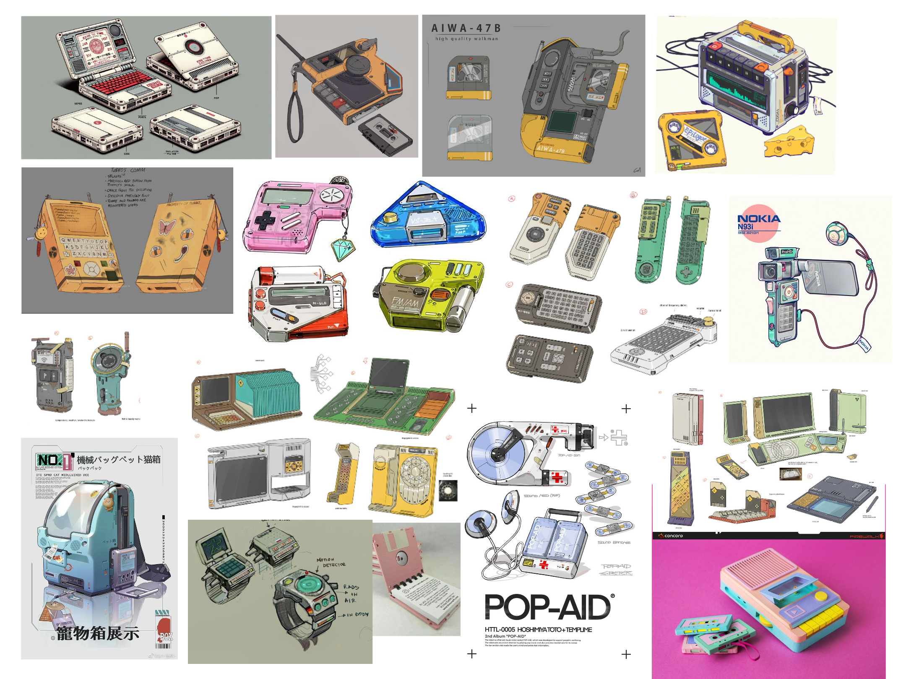
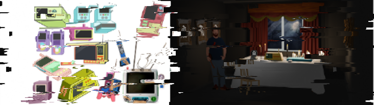
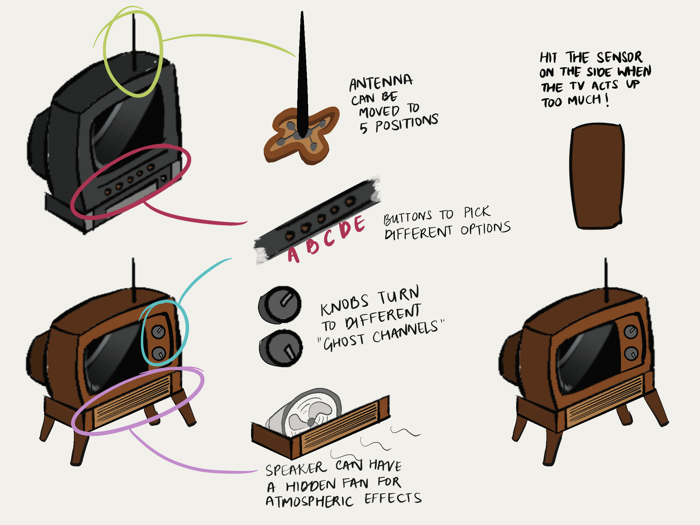
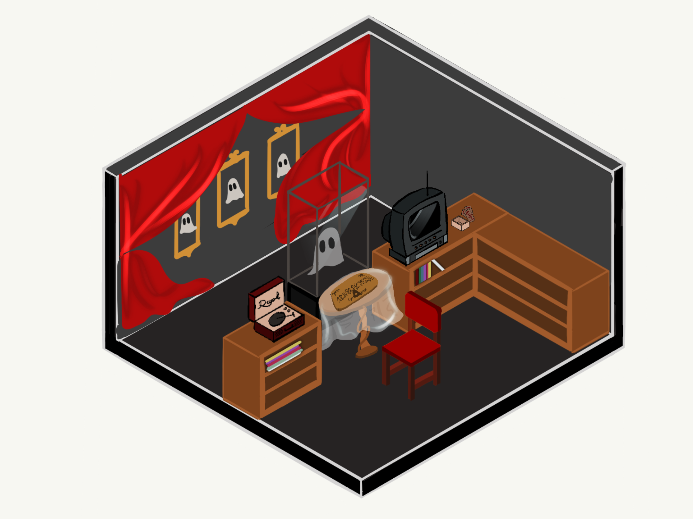
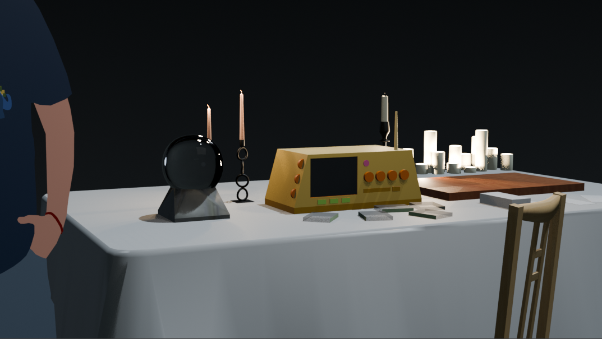
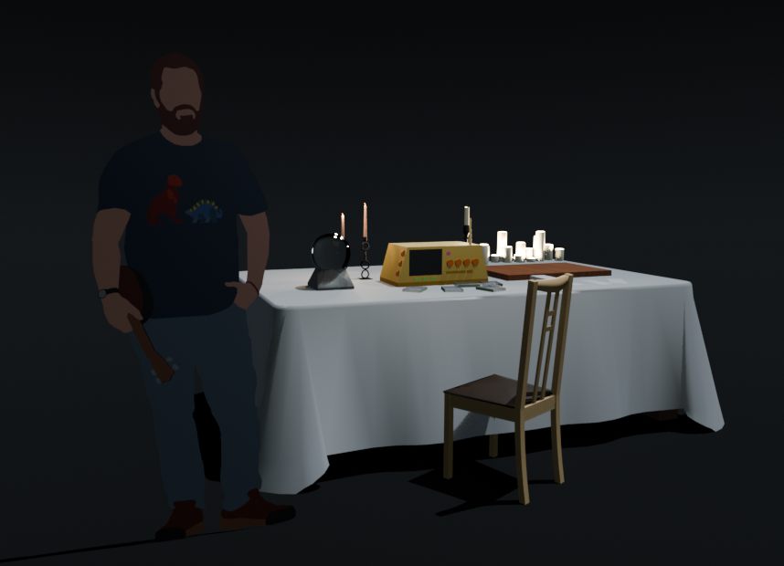
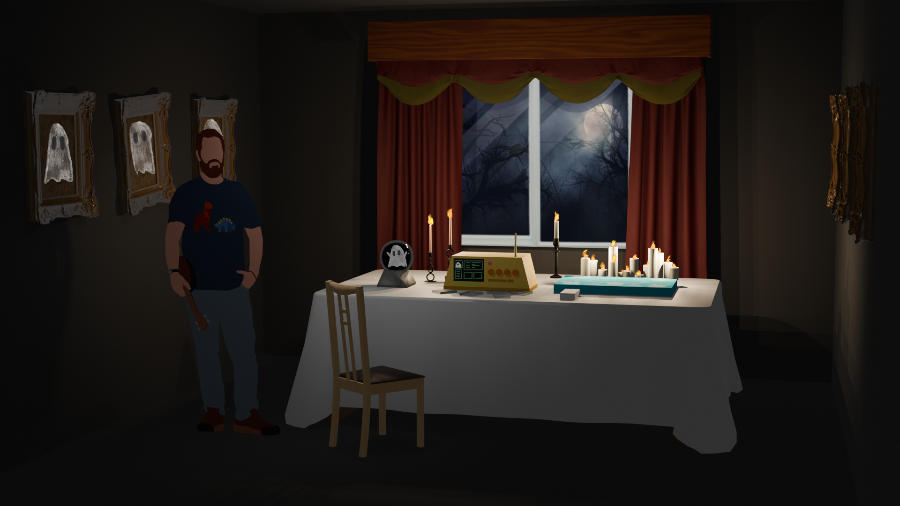
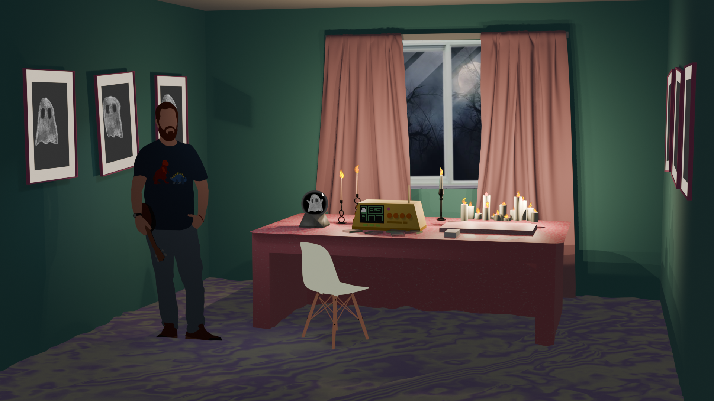

The goal was to develop the visual language and physical form of a fictional ghost-detection device before moving into fabrication and interactive prototyping.
The team had decided on a Y2K-inspired design.

Inspiration board
Experience Designer & Creative Technologist
Ghost Detection Device - Set and Prop Concept Design

The goal was to develop the visual language and physical form of a fictional ghost-detection device before moving into fabrication and interactive prototyping.
The team had decided on a Y2K-inspired design.

Inspiration board
Before designing the device, we identified the physical components that could become part of the player's interaction.
Ghost dating profiles
Play and pause / previous / next / rewind
Reads miniature cassette tapes
Adjustable orientation
Starts the game
Switch between options and responses
Select ghosts to talk to
Rapid sketches explored different silhouettes, control layouts, proportions, and ways the device could communicate its function.
Used both, 2D drawing and photobashing techniques, to convey designs.

Our very first idea was to use old tech like vintage TVs and record players.
Once our game design team finalised our list of 7 electronic components, early explorations focused on discovering how the physical components could be arranged for a Y2K-themed ghost detection device.
One of the storylines we had in mind was that of someone who built this device by themselves with 2000s tech they had with them, so I explored photobashing different tech components to come up with a makeshift ghost detection device.
Finalised space design:
3 devices:

Our very first idea was to use old tech like vintage TVs and record players.
.png)
.png)
.png)
Once we realised our route was fabricating the ghost detection device from scratch, I explored SketchUp and made our first space mockup.


I explored atmospheric lighting and the concept of a séance that is also a date night, with a more polished render using Blender.
You are a ghosthunter's grand-niece. He wasn't able to find love in his life, so you're helping him with his last wish: finding love atleast in death.
Final concept rendered with Blender, scene touchups done on Procreate.

The players are girls in a 2000s sleepover, summoning a ghost from their room.
Final concept rendered with Blender, scene touchups done on Procreate.
